GE18/1 Aerosol Sprayer 600cc GE18/2 Aerosol Sprayer 1000cc
All plastic construction, ideal for indoor plant watering or insecticide spraying.

Durable, functional cast products made to stand up to everyday outdoor use and changing conditions.
All plastic construction, ideal for indoor plant watering or insecticide spraying.
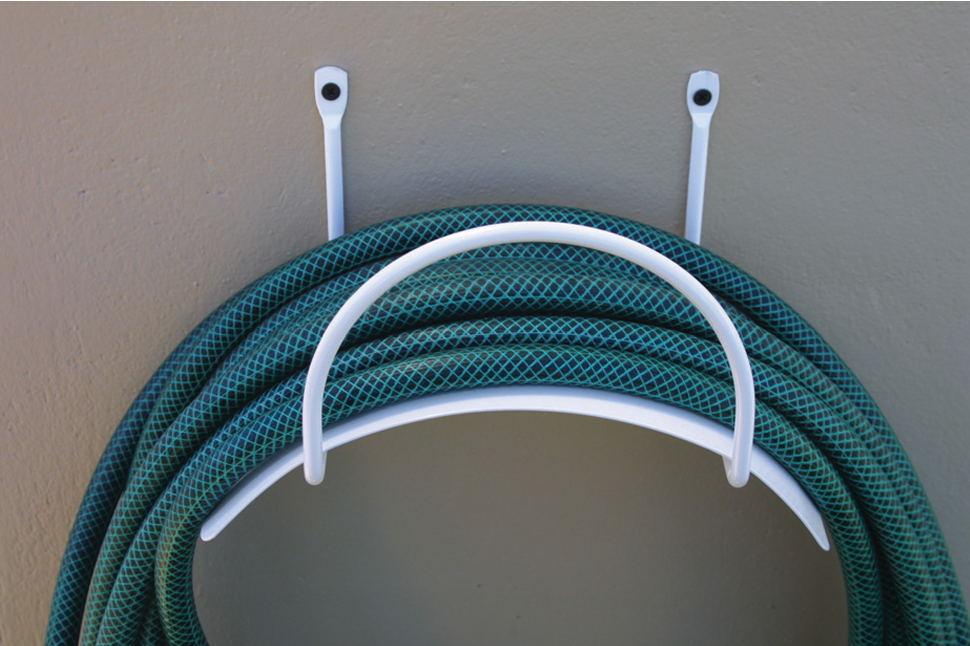
Ideal for any hose. Attached to a wall with two screws, this epoxycoated steel construction is your best storage solution.
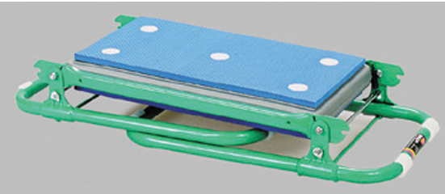
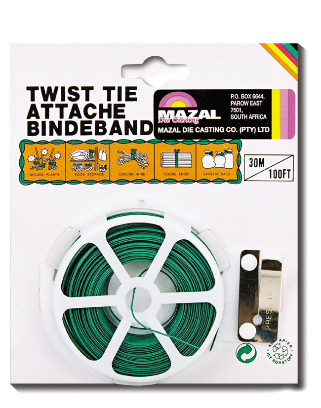
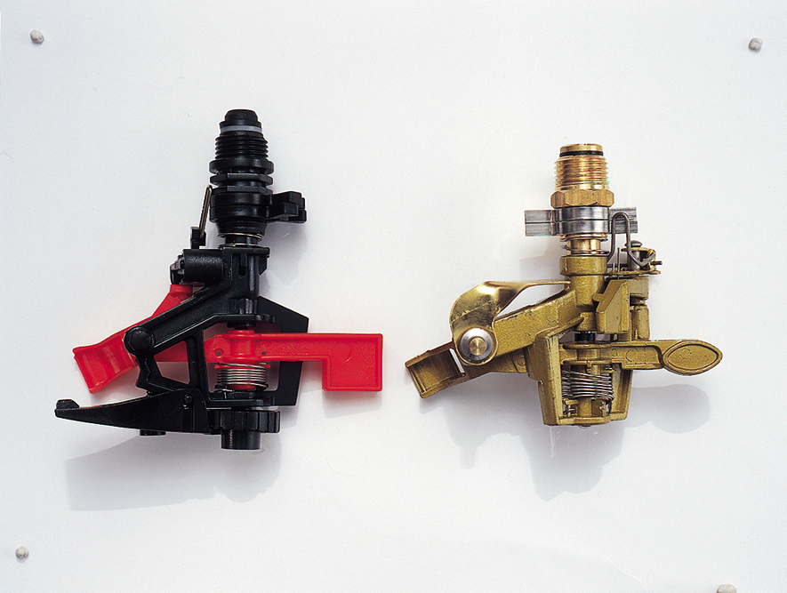
Fully adjustable for small to large areas. Part circle to full circle. GE2 - all plastic. GE2/1 - brass/zinc. To be mounted on GE2/4, GE2/5 or GE2/5/1.
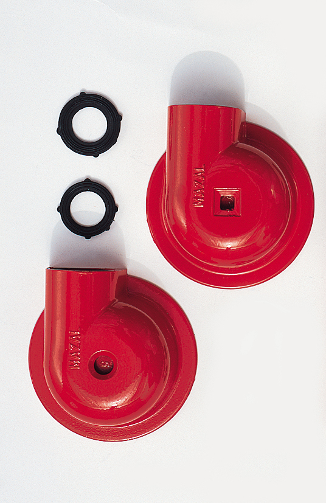
GE6 Mist Spray (round head) Zinc die-cast, trouble-free, ideal for medium water pressure. GE7 Mist Spray (square head) as above but more suitable for cornered sections in the garden.

Hand held, providing a gentle rain-like spray for delicate seedlings and flowers. All plastic with on/off switch and spike.

Steel, powder coated. Suitable for sprinkler heads: GE2, GE2/1 and GE4
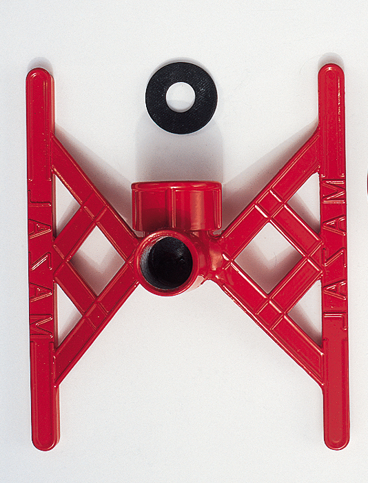
Robust zinc die-cast, powder coated with sealer ring. Suitable for sprinkler heads: GE2, GE2/1 and GE4
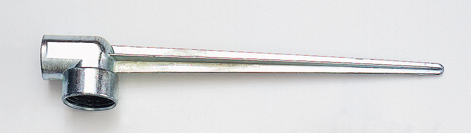
A useful addition to Garden Gun GE9. Made from durable zinc. Sprinkler heads can be attached to this spike and then mounted into the soil.

The right pruning tool for your garden. Made from die cast aluminium.
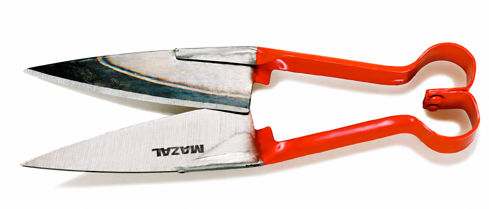
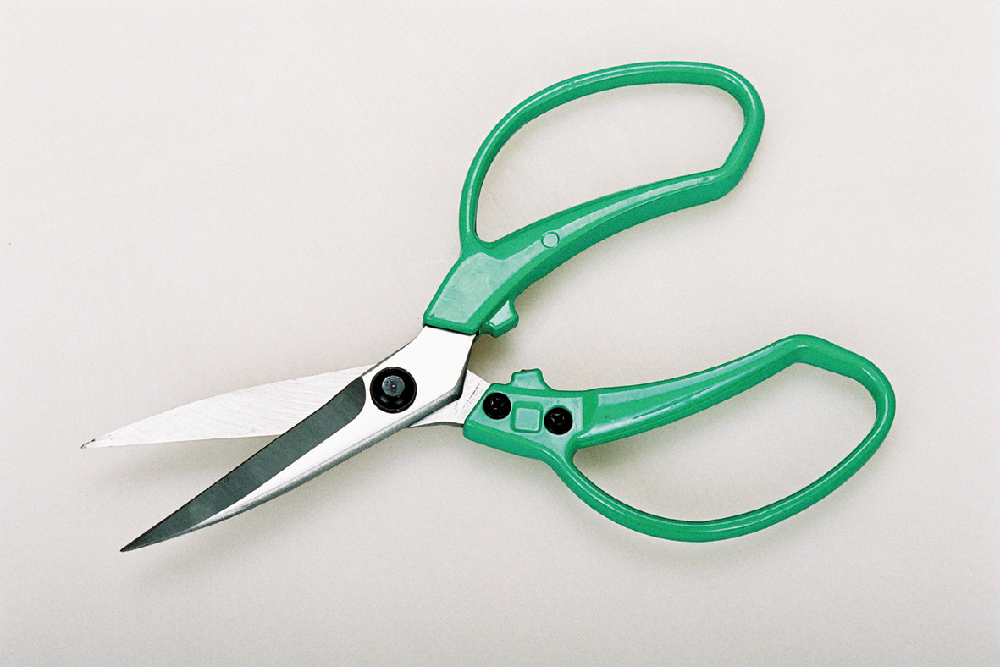

Professional hedge shears with high carbon blades and selected wooden handles.

With telescopic handles.

With aluminium telescopic handle bypass.

With telescopic handles.

With telescopic handles.

Steel tubing with rubber grips.
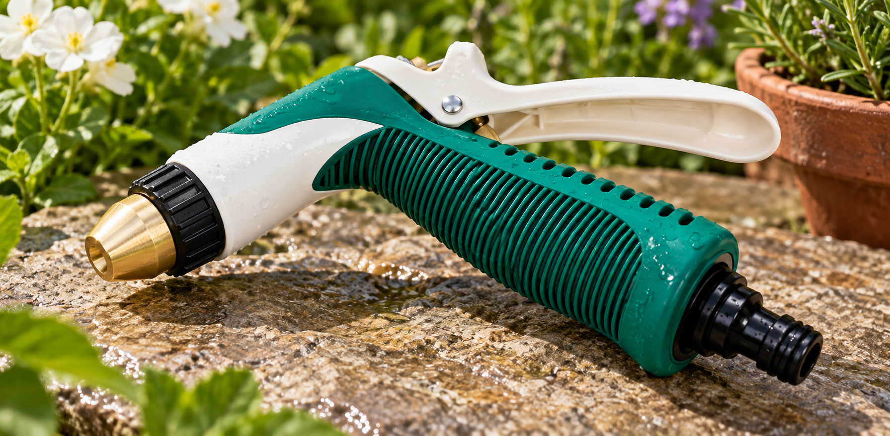


Epoxycoated steel, blue, with wooden handle.

GE27/1 Hand Fork Red epoxycoated steel with durable plastic handle. GE28/1 Hand Trowel Red epoxycoated steel with durable plastic handle.

GE25 Daisy Grubber Ideal for soil and lawn weeding. Red epoxycoated steel with durable plastic handle. GE26 Hand Cultivator Sturdy and useful for small areas. Red epoxycoated steel with durable plastic handle.

Heavy Duty 14 Tooth Rake Durable construction for tough jobs. Red epoxycoated steel with durable plastic handle.

Constructed from steel and rubber for collecting and sweeping loose leaves. Available with 26 teeth.

Constructed from hard steel with or without wooden broom handle. Ideal for garden lawns. Available with 22 teeth.

Constructed from a durable polypropylene material in bright red. Available with or without wooden broom handle.
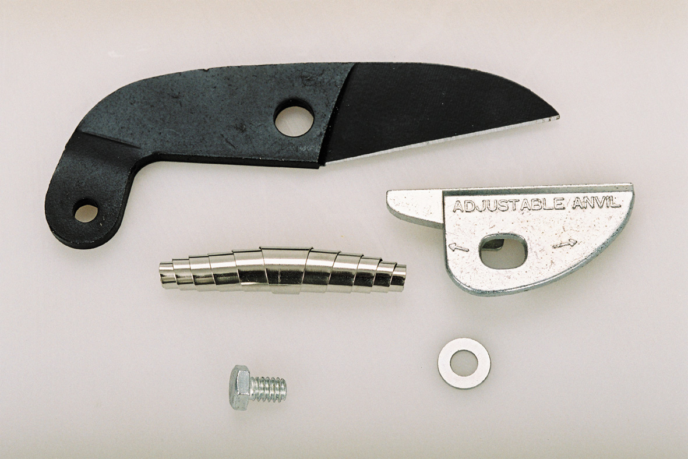
Available for Loppers and Bypass Pruners Bypass and Anvil Lopper Blade Sets

Solid brass construction. Produces a straight, high speed jet for car washing and other cleaning tasks. Plus a full range of sprays for most gardening applications.

A comprehensive range of rubber washers to fit sprinklers, tailpieces and tap connections.
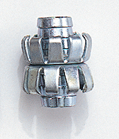
GE16/1 Clincher type Hose Mender For 13mm hose pipes. GE16/2 Clincher type Hose Mender For 19mm hose pipes
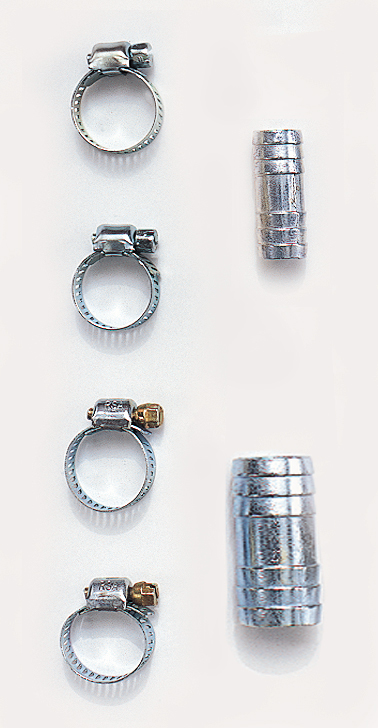
GE13/1 Hose Repair Kit To fix 13mm to 13mm hose. Supplied with two Jubilee Clips.
GE13/2 Hose Repair Kit To fix 19mm to 19mm hose. Supplied with two Jubilee Clips.
Jubilee Clips Available for Hose sizes 13/19mm.
GE33/3 Jubilee Clip 13 to 18mm.
GE33/4 Jubilee Clip 16 to 22mm.
GE34/1 Hose Ferrule Hose mender 13mm.
GE34/2 Hose Ferrule Hose mender 19mm.

Jubilee Clips Available for Hose sizes 13/19mm.

Zinc die cast/brassed finish. For 13mm tap/13mm hose.

Zinc die cast/brassed finish. For 19mm tap/19mm hose.

To fit 13mm tap
To fit 13mm tap

Zinc die cast/brassed finish. For 16mm tap/13mm hose.

Zinc die cast/brassed finish. For 22mm tap/13mm hose.

To fit 16mm tap.

To fit 19mm tap.

Zinc die cast/brassed finish. For 19mm tap/13mm hose.

Zinc die cast/brassed finish. For 22mm tap/19mm hose.

To fit 19mm tap